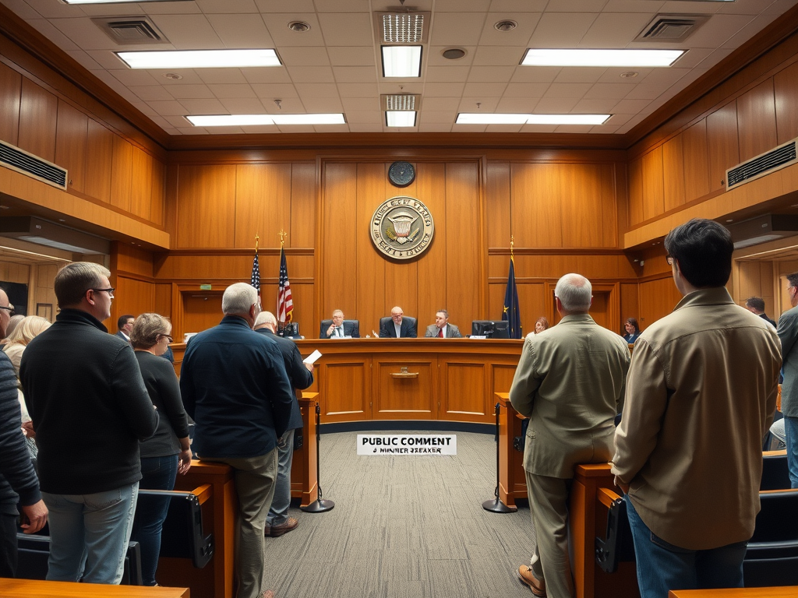
Voting, protesting, organizing, lobbying, running for office, fighting misinformation, and the long arcs of changing society — because real heroism looks like showing up to a city council meeting at 7 PM on a Tuesday.
Politics and activism touch real trauma — police violence at protests, government persecution, doxxing, employer retaliation, political violence, and the chronic stress of living under systems that harm you. Full Lines & Veils conversation required. A player may declare their character was not present for any politically-charged scene. The GM must never force a player to resolve a scenario that parallels their own real-world political trauma. If a player goes red light, the scene ends immediately.
Politics in Reality RPG is not a side quest. It is the architecture of every other system — the laws characters navigate, the taxes they pay, the schools their children attend, the police that respond to 911 calls, the hospitals they can or cannot afford. Political engagement is modeled as a commitment system with time costs, stress effects, social consequences, and real mechanical impact on a character's world.
Whether your character is a casual voter, a weekend protestor, a full-time organizer, or someone running for city council, this page provides the tools to make political life concrete, meaningful, and mechanically impactful.
Politics = a king you overthrow with a sword, or a corrupt noble you assassinate. Change happens through combat. The "system" is a person in a tower.
Politics = showing up to school board meetings, canvassing door-to-door, filing FOIA requests, building coalitions over years, and accepting that change is incremental. The "system" is a thousand interlocking institutions, and changing it requires patience, coalition-building, and relentless persistence.
In modern life, political identity is not a checkbox — it is a core dimension of self that shapes who you date, who you befriend, who you argue with at Thanksgiving, and which neighborhoods feel safe. Political polarization affects every social interaction a character has.
During character creation, determine a character's political alignment and identity intensity:
Supports social safety nets, civil rights, environmental regulation, wealth redistribution
Urban, college-educated, younger demographics
Pragmatic, reformist, willing to compromise across ideological lines
Suburban, mixed-age, often swing voters
Values limited government, free markets, traditional institutions, individual liberty
Rural, religious communities, business owners
Minimize government in all domains — economic and social
Tech communities, independent-minded individuals
Distrusts institutions regardless of party; focuses on "the system" itself
Working-class, disaffected voters, online communities
Does not identify with any political movement; may be apathetic or disillusioned
Young adults, minorities in hostile areas, people focused on survival
How central is politics to this character's identity? This determines the mechanical weight of political interactions:
One of the most common politically-charged scenes: family gatherings where politics come up. This is not optional — characters with Intensity 2+ will encounter these regularly.
When a political argument erupts at a family event:
Setup: Marcus (INT 5, RES 3, EXP 4, Intensity 4) is at Thanksgiving with his uncle, who recently started posting conspiracy theories on Facebook. His uncle brings up a false claim about the election.
Round 1: Marcus gains +1 SP (current: 4/25).
He tries to de-escalate: 2d10 + RES mod = 7 + 1 = 8 vs TN 10 → fail. His uncle doubles down.Round 2: Marcus gains another +1 SP (5/25).
He tries to argue: 2d10 + INT mod + EXP + Intensity bonus = 11 + 2 + 2 + 2 = 17 vs TN 12 → critical success. He calmly cites sources and his uncle goes quiet.Aftermath: Marcus gains his activist penalty of +1 SP (6/25).
His uncle gains +2 SP (feeling humiliated). The rest of the meal is tense. Marcus's mom gives him the look. Net result: Marcus "won" but everyone is stressed. The uncle will bring it up again next time.Political differences are one of the top predictors of relationship incompatibility in modern dating. Characters who are politically mismatched face ongoing social friction:
+2 to Compatibility checks · No ongoing SP cost
Baseline relationship strain
e.g., Moderate ↔ Progressive · No modifier · +0 SP
+10% chance of political arguments per month
Both Intensity ≤2 · −2 Compatibility · +1 SP per argument
+25% chance of political arguments per month
Either Intensity ≥4 · −4 Compatibility · +2 SP per argument; +1 SP/week baseline
+50% arguments; 10% chance/month of breakup over politics
Characters spend time on social media. The algorithm actively shapes their worldview:
Track a character's political SP budget separately from their general stress. Political stress accumulates from arguments, news consumption, protest participation, and campaign work. When their political SP exceeds their total SP capacity, they experience political burnout — they disengage, mute political accounts, or avoid political spaces for 1–3 months. This is a protective mechanism, not a failure.
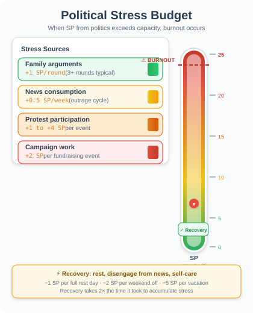
Beyond just showing up on Election Day, civic engagement is a spectrum of commitment — from passive registration to active participation in the machinery of democracy itself.
At character creation, determine registration status. Roll 1d10: on 1–7, the character is registered. On 8–10, they are not. Characters under 18, undocumented immigrants, and certain felons (state-dependent) cannot register. Registering costs 1–3 hours and may require a 2d10 + INT mod vs TN 8 check to navigate the bureaucracy successfully.
1–4 hours (wait time varies) · SP ±0 · High reliability
Longest lines; most visible civic act
30 min–2 hours · SP ±0 · High reliability
Shorter lines; less stressful
1–2 hours (filling + mailing) · SP ±0 · Medium-High reliability
Risk of rejection if form errors; +1 SP from anxiety about ballot counting
10–30 minutes · SP ±0 · High reliability
Fastest method; growing availability
This is a key Reality RPG principle: local elections (school board, city council, county commissioner, sheriff, judge) have more direct impact on characters' daily lives than national elections — yet they get 1/10th the attention.
After each local election cycle (annually or biennially), the GM determines outcomes for 5 domains that directly affect characters:
Characters who voted in local elections gain a +1 bonus to any check related to those domains for the next year (they know what to expect and can plan accordingly).
Characters can volunteer as poll workers — a real civic role with actual responsibilities:
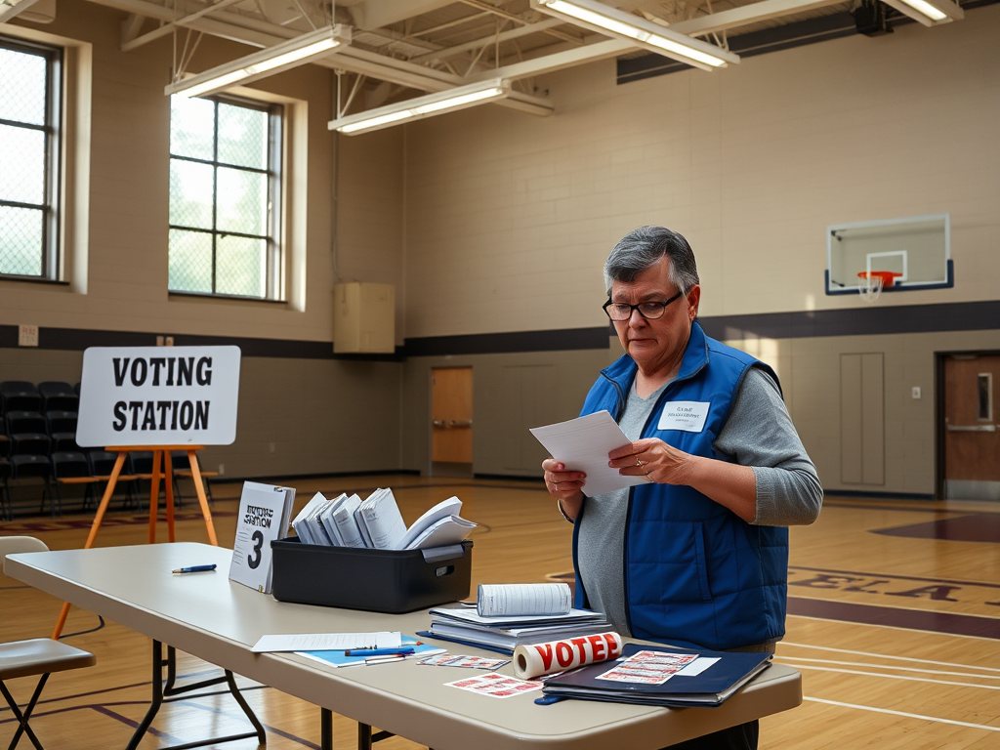
Elena (INT 4, PRC 5, EXP 3) volunteers as a poll worker at her neighborhood elementary school. She arrives at 6 AM for setup.
Morning: A voter shows up claiming they're registered, but the system says otherwise. Elena handles it with a 2d10 + PRC mod = 13 + 2 = 15 vs TN 10 → success. She issues a provisional ballot and de-escalates the situation. The voter is grateful.
Afternoon: The voting machine jams. Elena troubleshoots: 2d10 + INT mod = 9 + 1 = 10 vs TN 8 → success. She reboots the system and minimizes the line backup. The supervisor commends her.
End of day: Elena earns $100, gains +1 SP from the long day, and earns the Civic Servant trait.
She feels a genuine sense of purpose — a rare Morale event in her otherwise stressful month.Characters can organize or participate in voter registration drives — a form of grassroots civic engagement:
Protests are one of the most visible forms of political engagement — and one of the most mechanically complex. They involve planning, risk, social consequences, and uncertain outcomes. A protest in Reality RPG is a multi-stage event that can span multiple sessions.
Organizing a protest is a multi-check project that takes 1–4 weeks of preparation:
2d10 + EXP mod vs TN 10 · 3–7 days
Failure: Permit denied; protest must be unpermitted (+risk)
2d10 + PRC mod + EXP mod vs TN 12 · 5–10 days
Failure: Fewer attendees than expected (−50% turnout)
2d10 + INT mod + DXT mod vs TN 10 · 2–5 days
Failure: Equipment issues; disorganized event
2d10 + PRC mod vs TN 14 · 1–2 weeks
Failure: Key groups don't show up; weaker turnout
2d10 + INT mod vs TN 10 · 2–3 days
Failure: No de-escalation team; higher injury risk
After all planning checks, sum successes. Each success adds +1 to a final 1d10 roll that determines protest size:
Protest size directly affects police response level, media coverage, and personal risk.
Once a protest is underway, participants face ongoing risk:
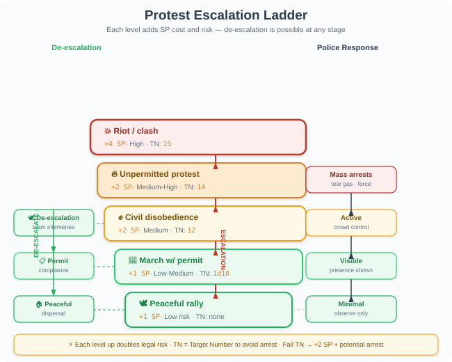
The GM determines police response based on protest size and type:
Counter-protests: Roll 1d10 at the start of any protest with 200+ attendees. On 6–10, counter-protesters show up. This adds +1 SP to all participants and increases confrontation risk by +2 to all TNs.
Does the protest actually change anything? In Reality RPG, single protests rarely do — but they are building blocks:
After a protest, the GM assigns Momentum Points toward the cause:
Accumulating 10+ Momentum Points on a single issue triggers a Policy Review event — officials must respond. Accumulating 20+ triggers actual policy change. This is the core mechanic behind Systemic Change Arcs (Section 8).
Setup: Aisha (INT 4, EXP 6, PRC 5, RES 4) is organizing a protest against a new luxury development displacing low-income families in Riverside. She has 3 weeks to plan.
Planning phase:
Result: 4 successes → roll 1d10 + 4 = 7 + 4 = 11 → clamped to 10 → Massive protest (5,000+). Media covers it. Police are present but don't escalate. Counter-protesters show up (roll 8 on 1d10) but the de-escalation team prevents clashes.
Aftermath: Aisha gains +2 SP from the stress (now at 8/25).
The protest earns 5 Momentum Points toward the housing justice cause. The developer announces they'll "reconsider" — a small win, but not a victory. Aisha knows she needs 15 more Momentum Points to force a real policy review.After a high-visibility protest, characters face real-world consequences:
Community organizing is the slow, unglamorous work of building power from the ground up. It is not a single event but a long-term commitment measured in months and years. This is where real systemic change begins.
The bread and butter of organizing. Canvassing involves knocking on doors, talking to strangers, and hearing "no" 90% of the time:
2d10 + PRC mod vs TN 10 · 2–4 hrs/shift
Success: Gain 1 Support Point · Failure: +0.5 SP per 10 rejections
2d10 + PRC mod vs TN 9 · 3–6 hrs/shift
Success: Gain 1 Support Point (less stressful) · Failure: +0.25 SP per 10 hung-ups
2d10 + INT mod vs TN 11 · 1–3 days to prepare
Success: Gain 2 Support Points · Failure: Poor response; wasted resources
Canvassing is emotionally exhausting. After each canvassing shift:
Organizing requires regular community meetings — the lifeblood of grassroots movements:
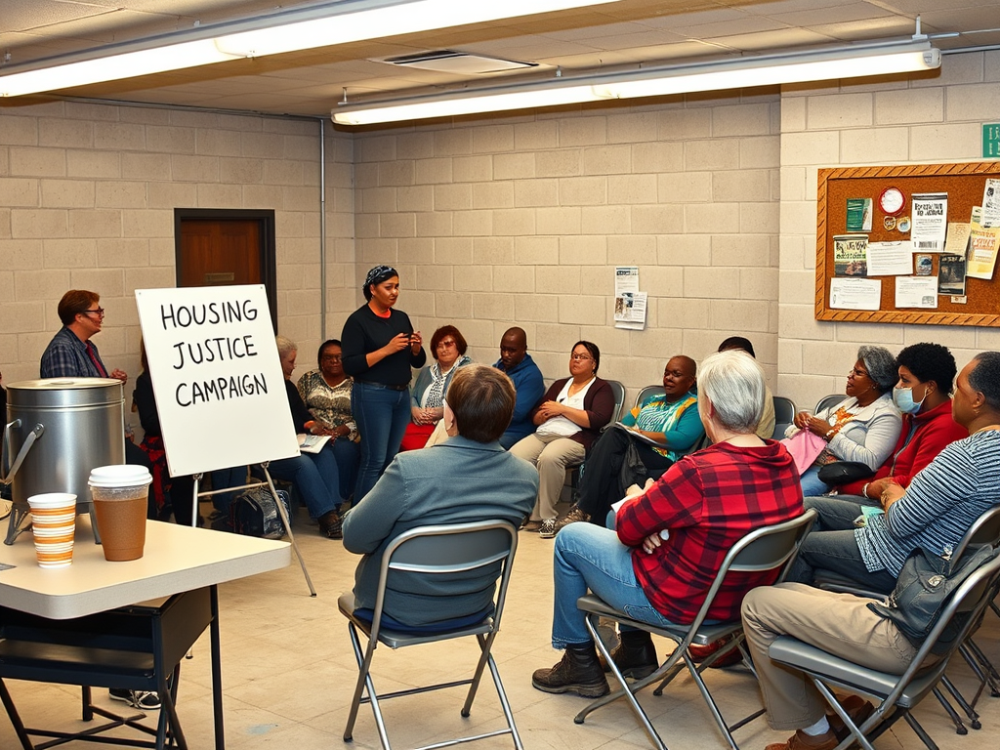
The hardest part of organizing: getting different groups to work together despite competing interests:
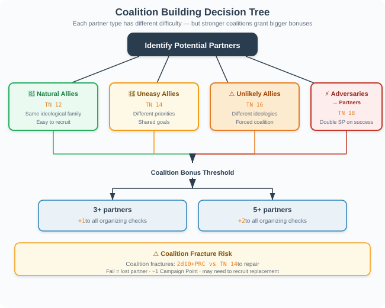
Each coalition partner requires a separate 2d10 + PRC mod + EXP mod vs TN 14 check. The GM assigns a difficulty modifier based on how aligned the groups are:
A coalition with 3+ active partners gains coalition bonus: all organizing checks within the coalition gain +1. With 5+ partners, the bonus increases to +2.
Organizing is measured in months and years, not sessions. Track progress on a Campaign Timeline:
Characters who accumulate more than 15 SP from organizing activities in a single month are at risk of activist burnout. The GM should offer a 2d10 + RES mod vs TN 14 check at the end of such a month. Failure means the character needs 1–3 months of reduced activity to recover. This is not a failure of character — it is a realistic modeling of how organizing actually works. The best organizers know when to rest.
Week 1: Aisha canvasses Riverside. 3 shifts of 3 hours each. 2d10 + PRC mod checks: 2 successes, 1 failure. She gains 2 Support Points. Week 1 rejection roll: a 7 — no hostility. SP: +2 from canvassing stress (now 10/25).
Week 2: Phone banking night. 2d10 + PRC mod = 14 + 2 = 16 vs TN 9 → success. Gains 3 Support Points. SP: +1 (now 11/25). Community meeting: +1 Morale event offsets the SP. Net SP: 10/25.
Week 3: Coalition building. Aisha tries to bring the local church and the tenant union together. 2d10 + PRC mod + EXP mod = 16 + 2 + 3 = 21 vs TN 14 → critical success. Both groups agree to co-sponsor. Coalition bonus unlocked (+1 to all checks).
Week 4: Big community meeting. 30 attendees. 5 new volunteers sign up. Aisha gains 4 Support Points from the event. SP: +1 (now 11/25). End of month total: 9 Support Points toward the 10 needed for Initial Awareness. One more successful activity and the campaign reaches its first milestone.
Running for political office is one of the most ambitious character goals in Reality RPG. It is a multi-session campaign arc that touches every other system in the game — finances, social dynamics, mental health, time management, and public reputation.
Encourage players to start with local offices. School board and city council are where real change happens, and they're mechanically achievable. A character running for Congress on their first campaign is like a level 1 character trying to solo the final boss — technically possible, but not fun for anyone.
A campaign unfolds in 4 overlapping phases, each with its own checks and risks:
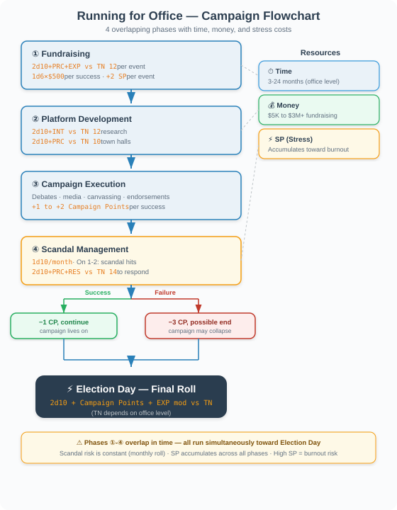
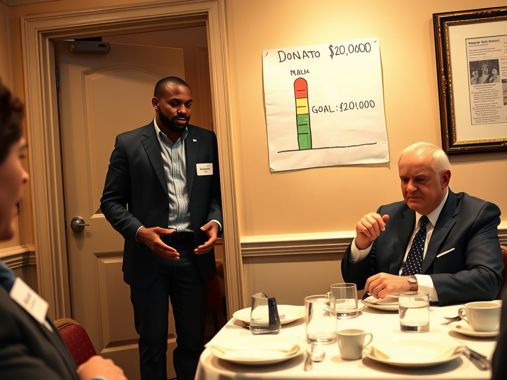
2d10 + PRC mod + EXP mod vs TN 14
Success: +2 Campaign Points · Fail: −1 Campaign Point
2d10 + PRC mod + INT mod vs TN 12
Success: positive coverage · Fail: misquoted or taken out of context
2d10 + PRC mod vs TN 10
Success: +1 Campaign Point per shift · Fail: no gain
2d10 + INT mod vs TN 11
Success: growing online presence · Fail: engagement drops
2d10 + PRC mod + EXP mod vs TN 14
Success: key endorsement · Fail: ignored or rejected
At election time, the GM compares Campaign Points accumulated by each candidate. The candidate with the most points wins. Ties go to the incumbent.
Final roll: 2d10 + Campaign Points + EXP mod vs a base TN set by the office level:
Incumbents start with +3 Campaign Points (name recognition, established network). Open seats have no incumbent bonus.
Marcus (INT 5, EXP 4, PRC 4, RES 3) decides to run for City Council Ward 7. He has 6 months and $30,000 in savings.
Month 1–2 (Fundraising): 4 events. 3 successes, 1 failure. Raises $4,500 + $3,000 + $5,500 + $400 = $13,400. SP: +8 from fundraising stress (now 6/20). Uses $5,000 for campaign materials.
Month 3 (Platform): Research check: 2d10 + INT mod = 13 + 2 = 15 vs TN 12 → success. Town hall: 2d10 + PRC mod = 10 + 1 = 11 vs TN 10 → success. Platform focuses on affordable housing and small business support — resonates with Ward 7.
Month 4–5 (Campaign): Debate: 2d10 + PRC mod + EXP mod = 16 + 1 + 2 = 19 vs TN 14 → success (+2 Campaign Points). Media interview: 2d10 + PRC mod + INT mod = 8 + 1 + 2 = 11 vs TN 12 → fail. He's misquoted on a housing policy detail. Canvassing: 5 shifts, 4 successes (+4 Campaign Points). Social media: 2d10 + INT mod = 14 + 2 = 16 vs TN 11 → success. Endorsement from local NAACP: 2d10 + PRC mod + EXP mod = 15 + 1 + 2 = 18 vs TN 14 → success. Total Campaign Points: 7.
Month 6 (Scandal): Roll 1d10 = 2 — a scandal! An old tweet about a controversial topic resurfaces. Response check: 2d10 + PRC mod + RES mod = 12 + 1 + 0 = 13 vs TN 14 → fail. −3 Campaign Points. SP: +3 (now 14/20 — dangerously close to burnout). Campaign Points: 4.
Election Day: Final roll: 2d10 + 4 + 2 = 11 + 6 = 17 vs TN 12 → WIN. Marcus is elected City Councilor. The campaign cost him $15,000 of savings, 14 SP of stress, and 6 months of his life. He won — but the real work starts now.
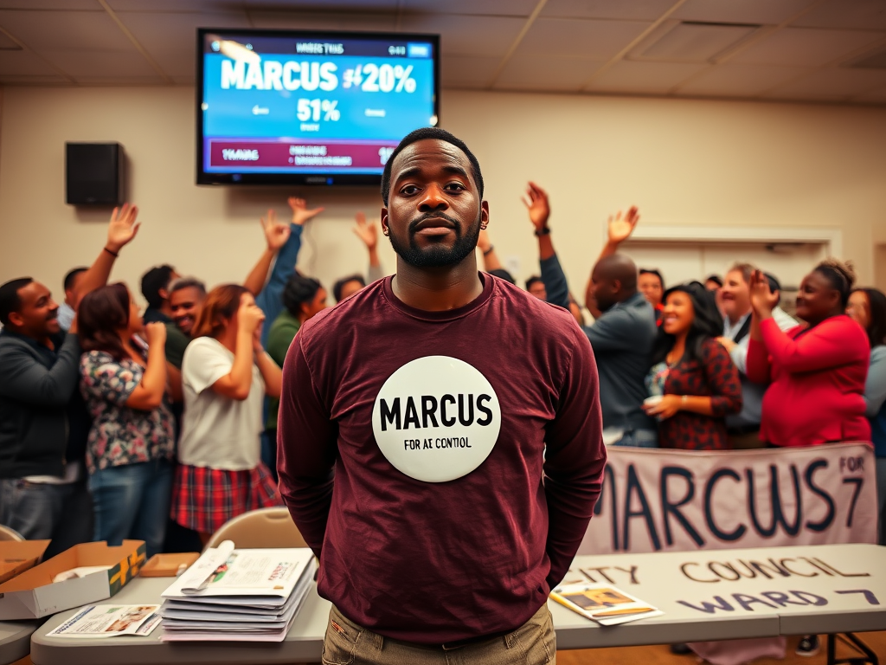
Most policy change happens behind closed doors — not in protests or elections, but in the quiet work of building relationships with decision-makers and their staff. This section covers how characters can influence policy from the outside.
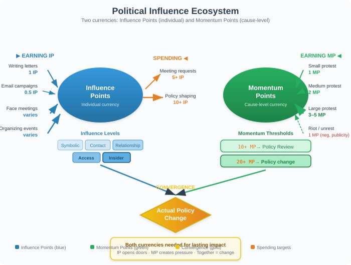
In real politics, staffers do the actual work. Elected officials set direction, but their aides draft legislation, schedule meetings, and filter information. Characters who invest in building relationships with staffers will have more influence than characters who only try to reach the elected official. This is a key insight that separates experienced organizers from newcomers.
The lowest-effort, lowest-impact form of advocacy. Still worth modeling because characters do this:
Once a character has built enough Influence Points (5+ on a specific issue), they can request a meeting:
Setup: After months of organizing (see Section 4), Aisha has accumulated 8 Influence Points on the affordable housing issue. She requests a meeting with City Councilor Ramirez.
Meeting request: 2d10 + PRC mod + 8 = 9 + 2 + 8 = 19 vs TN 14 → success. Ramirez's scheduler sets up a 20-minute meeting.
Preparation: Aisha spends 3 hours researching Ramirez's voting record on housing, preparing tenant displacement data, and drafting specific policy language. She gains +2 to the meeting check.
The meeting: 2d10 + PRC mod + INT mod + EXP + 2 prep = 13 + 2 + 1 + 3 + 2 = 21 vs TN 14 → critical success. Ramirez is genuinely moved. She agrees to co-sponsor a tenant protection ordinance. Aisha gains +5 Influence Points toward housing policy. SP: +2 (now at 13/25).
Aftermath: This is a real win. Not because the ordinance will pass tomorrow — it won't. But because a city councilor is now formally committed to the issue. The legislative process has begun. Aisha knows the next phase will be committee hearings, amendments, and negotiation. But this meeting was the turning point.
A key teaching in Reality RPG: not all political action is equally effective. Characters should understand the difference:
Signing petitions, posting on social media, wearing a cause T-shirt, attending a one-off rally. These feel good and provide +1 Morale, but they generate negligible real-world impact. They are the political equivalent of hitting a punching bag — satisfying in the moment, but the bag is still standing afterward.
Showing up to committee meetings, building long-term relationships with staffers, voting in every local election, organizing sustained campaigns, running for office yourself. These are slow, unglamorous, and mechanically impactful. They generate Influence Points, Momentum Points, and actual policy change.
In the modern information ecosystem, knowing what's true is an active skill — not a given. Characters must navigate fake news, deepfakes, algorithmic echo chambers, and the constant churn of outrage content.
When a character encounters a news story, claim, or viral post, they can attempt to verify it:
Characters who invest in media literacy (through education, habit, or experience) can gain the Media Literate trait:
Every character who uses social media is subject to algorithmic influence:
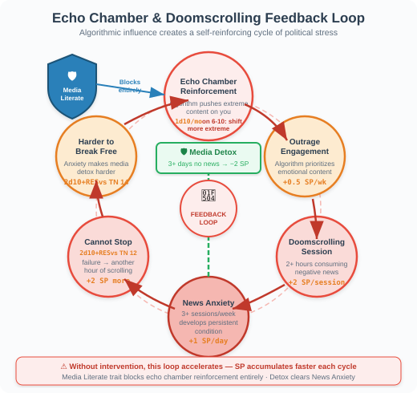
A specific and dangerous behavior: compulsive news consumption that directly harms mental health:
When a character doomscrolls (consuming negative news for 2+ hours without a break):
An escalating threat. Characters may encounter deepfakes — AI-generated images, videos, or audio that appear real:
The crown jewel of Reality RPG political mechanics: long-term campaign arcs where characters work to change actual systems. These are multi-session storylines that span months or years of game time, with concrete milestones, setbacks, and victories.
Every systemic change arc follows 5 phases:
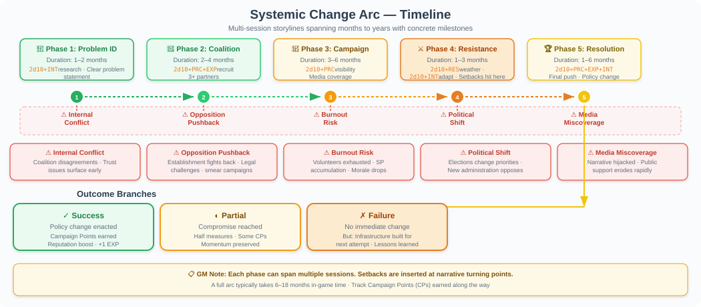
1–2 months · 2d10 + INT mod (research)
Clear problem statement; initial allies identified
2–4 months · 2d10 + PRC mod + EXP mod (recruit)
3+ active coalition partners; shared strategy
3–6 months · 2d10 + PRC mod visibility; 2d10 + EXP mod organizing
Media coverage; public awareness; official response required
1–3 months · 2d10 + RES mod weather; 2d10 + INT mod adapt
Survive the pushback; maintain coalition unity
1–6 months · 2d10 + PRC + EXP + INT mod (final push)
Policy change, program launch, or cultural shift achieved
Scope: City-wide. Duration: 2–5 years. Difficulty: Extreme.
Phase 1: Research homelessness data, identify root causes (housing costs, mental health access, employment barriers). 2d10 + INT mod vs TN 14.
Phase 2: Build coalition with homeless shelters, mental health advocates, housing developers, faith groups, and unhoused individuals themselves. 2d10 + PRC mod + EXP mod vs TN 16 (diverse coalition = harder to build).
Phase 3: Public campaign — "Housing First" model. Media events, personal stories, data presentations. 2d10 + PRC mod vs TN 14 per campaign action.
Phase 4: Opposition — NIMBY residents, property owners, fiscal conservatives. They organize counter-campaigns. 2d10 + RES mod vs TN 16 to maintain coalition unity. 2d10 + INT mod vs TN 14 to adapt strategy when setbacks hit (e.g., a shelter opening goes wrong).
Phase 5: Final push — city council vote on housing ordinance. 2d10 + PRC mod + EXP mod + INT mod vs TN 18. Success: ordinance passes. Partial success (meet TN −2): compromise ordinance passes (helps some, not all). Failure: ordinance defeated — but the campaign has built infrastructure for the next attempt.
SP cost across arc: 25–40 SP cumulative. Characters will need multiple recovery periods. This is intentional — the work is hard.
Scope: District or state-wide. Duration: 1–3 years. Difficulty: Very Hard.
This arc focuses on the equity gap in school funding — where property-tax-based funding means wealthy districts have better schools. Key actions:
Scope: Neighborhood-level. Duration: 2–4 years. Difficulty: Hard.
This arc is about protecting existing communities from displacement. Key actions:
Scope: Neighborhood-level. Duration: 3–6 months. Difficulty: Medium.
A more accessible arc — great for new characters entering the politics system:
Scope: Neighborhood to city-wide. Duration: 2–6 months to launch; ongoing. Difficulty: Medium.
Mutual aid networks are community-based systems of direct support — food distribution, rent assistance, childcare co-ops:
Systemic change is never linear. Each arc must include setbacks:
Once per arc phase · Coalition partner leaves; −2 Support Points
2d10 + PRC mod vs TN 14 to repair
Once per arc · Counter-campaign; all TNs +2 for 1 month
2d10 + RES mod vs TN 12 to weather it
When cumulative SP > 15 · Character must rest 1–2 months; arc pauses
2d10 + RES mod vs TN 14 to recover
Once per arc (election cycle) · New official opposes; all checks +2 TN
2d10 + PRC mod + EXP mod vs TN 16 to build new relationship
Once per arc · Cause misrepresented; −3 Influence Points
2d10 + PRC mod + INT mod vs TN 14 to correct record
Completing a systemic change arc provides lasting mechanical benefits:
Complete any arc
+2 to all future organizing checks; −1 TN on coalition building
Complete 2+ arcs
Community gains +1 Morale when present; −1 SP/month from purpose
Complete 3+ arcs
Identify shortcuts and allies; −2 TN on Phase 1 for any new arc
Complete 5+ arcs
Start new arcs at Phase 2; all arc TNs reduced by 1
Aisha (see character portrait above) has been organizing for 6 months. She enters Phase 3 of her housing justice arc.
Public Campaign (Month 4–6):
Setback (Month 5): Opposition pushback — a property owners' group launches an ad campaign framing the ordinance as "anti-business." All TNs +2 for 1 month. Aisha's coalition wavers. 2d10 + RES mod = 12 + 1 = 13 vs TN 12 → success. Coalition holds, barely.
Final Push (Month 7): The ordinance goes to a city council vote. 2d10 + PRC mod + EXP mod + INT mod = 15 + 2 + 3 + 1 = 21 vs TN 16 → success. The Tenant Protection Ordinance passes 5–4. It includes rent stabilization, just-cause eviction protections, and a right-to-counsel provision.
Aftermath: Aisha gains the Change Agent trait. She's at 18/25 SP — close to burnout — but the Morale event from the victory is enormous.
She takes 2 weeks off (−3 SP from rest). When she returns, she's already thinking about the next fight: enforcing the ordinance.Real-world parallel: This mirrors real tenant protection campaigns in cities like Seattle, Minneapolis, and Chicago — where organizing took 1–3 years, faced fierce opposition, and ultimately passed through persistent grassroots pressure.
Systemic change arcs require active GM participation:
Reality RPG is about real life, and real life can be brutal. But hope is not naive — it is a discipline. Systemic change arcs should be difficult but achievable. Characters should feel the weight of the work and the genuine possibility of making a difference. The SP system models the cost; the arc system models the path. Together, they tell the story of what it actually takes to change the world — one meeting, one conversation, one vote at a time.